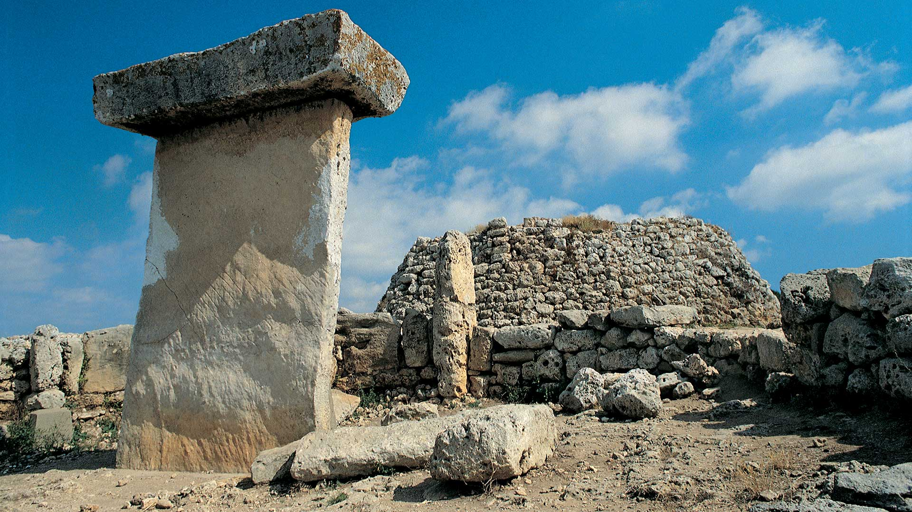

Informacion General
Por su extensión y tamaño, Trepucó fue durante la prehistoria un centro de poder del este de la isla. Lo ponen de manifiesto las estructuras monumentales y los resultados de las investigaciones arqueológicas llevadas a cabo en este emplazamiento.
El poblado prehistórico de Trepucó es uno de los grandes poblados de la zona este de Menorca. Se sabe que originalmente sus construcciones debieron extenderse más de 5 hectáreas y que hacia el siglo V aC estaba rodeado por una muralla ciclópea defendida de tramo a tramo por torres cuadradas.
Actualmente se conserva el santuario de mesa y el gran talayot central , que mide más de 26 m de diámetro y que tiene una altura de más de 8 m. El yacimiento arqueológico fue excavado en los años treinta del siglo XX por la arqueóloga británica Margaret Murray, que obtuvo resultados que en ese momento tuvieron un gran impacto científico.
Es muy probable que el asentamiento fuera destruido durante la segunda guerra púnica (218-201 aC), cuando el general Magón , hermano de Aníbal, se instaló en el puerto de Mahón (puerto y ciudad que es probable que reciban el su nombre a causa de este hecho) para reclutar posiblemente honderos que debían combatir en Italia contra los romanos.
En el último tercio del siglo XVIII la mesa y el talayot se rodearon de una fortificación en forma de estrella pentagonal construida (1782) durante el asedio español del castillo de San Felipe, entonces en manos británicas. En lo alto del talayot se instaló un puesto de mando y un cañón. Esta parte central del monumento es titularidad del Consell Insular de Menorca.
El conjunto fue declarado Monumento Histórico Nacional (1931).